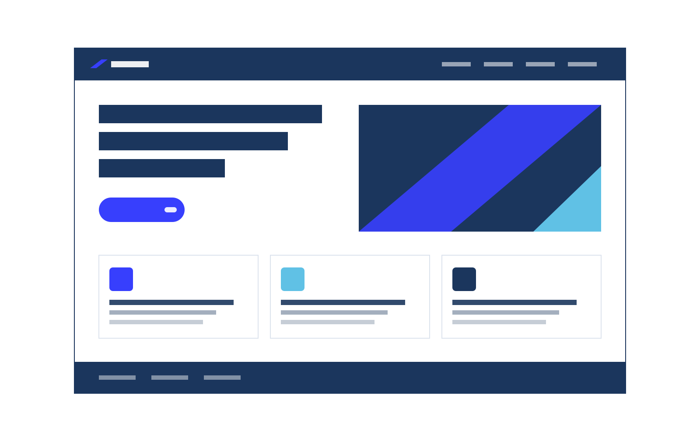

Solusi sesuai kebutuhan
Layanan disesuaikan dengan tujuan dan kebutuhan bisnis klien.



Dari rangka sampai jadi.
Ruang untuk bertumbuh
01 / About us
KIVRA Digital merupakan creative technology agency yang berfokus pada pengembangan solusi digital untuk mendukung kebutuhan bisnis di era teknologi. Kami menggabungkan kreativitas, inovasi, dan teknologi untuk menciptakan pengalaman digital yang memberikan nilai bagi setiap klien.
Kenali visi & misi02 / Kenapa KIVRA?
Partner kreatif yang memahami kebutuhan, bekerja bersama, dan tumbuh bersama bisnismu.
Layanan disesuaikan dengan tujuan dan kebutuhan bisnis klien.
Menghadirkan ide segar dan pendekatan kreatif untuk kebutuhan digital.
Berkolaborasi dengan klien untuk menghasilkan solusi yang relevan.
Mendukung perkembangan identitas digital dan jangkauan bisnis secara berkelanjutan.
03 / Arah dan tujuan
Mendorong bisnis bertumbuh dan membuka ruang bagi talenta muda.
04 / Our services
Fokus kami dua hal: membangun website yang siap dipakai, dan merancang pengalaman pengguna di dalamnya.
Membangun website profesional, responsif, dan mudah digunakan untuk kebutuhan bisnis maupun personal.

Merancang tampilan dan pengalaman pengguna yang menarik, intuitif, serta fungsional.

05 / Jenis website
Empat bentuk yang paling sering dibutuhkan. Kalau kebutuhanmu di luar ini, ceritakan saja.
Profil, layanan, dan kontak bisnis dalam satu tempat yang rapi. Cocok saat calon klien mencari namamu di Google dan ingin tahu kamu nyata.
Satu halaman dengan satu tujuan: kampanye, promo, atau peluncuran produk. Semua isinya mengarah ke satu tombol.
Katalog produk, keranjang, dan alur pembayaran yang mudah diikuti pembeli sampai selesai.
Sistem dengan alur dan datanya sendiri — seperti aplikasi pemesanan Shana Studio yang kami bangun.
06 / Cara kerja
Kamu tahu posisi proyek di setiap tahap, dan apa yang kami butuhkan darimu.
Kami dengarkan tujuan, audiens, dan kendalamu sekarang. Keluarannya: ringkasan kebutuhan yang kamu setujui dulu.
Struktur halaman, alur pengguna, dan tenggat disusun. Kamu melihat rangkanya sebelum satu baris kode ditulis.
Desain dan pengembangan berjalan. Kamu dapat tautan pratinjau yang bisa dibuka kapan saja selama proses.
Situs aktif, akses diserahkan, dan kami temani lewat masa dukungan.
07 / Karya pilihan
01/5
01Motion loop · Showreel
08Kolaborasi
Dari UMKM sampai creator, KIVRA Digital terbiasa bekerja lintas kebutuhan dan lintas skala.
08Kolaborasi
Dari UMKM sampai creator, KIVRA Digital terbiasa bekerja lintas kebutuhan dan lintas skala.
01 / 4
08 / Kolaborasi brand
Dari brand lokal yang sedang tumbuh sampai rumah mode internasional.
09 / Biaya
Tergantung jumlah halaman, fitur, dan tingkat kerumitannya — landing page satu halaman jelas berbeda dari sistem pemesanan. Kami hitung setelah tahu kebutuhanmu, lalu kirim rinciannya sebelum ada komitmen apa pun.
10 / Pertanyaan umum
Belum terjawab? Chat admin lewat tombol WhatsApp di pojok layar.
Tergantung jenisnya. Landing page paling cepat, company profile menengah, web app paling lama karena fiturnya perlu diuji. Tenggat pastinya kami sepakati di langkah Plan, bukan dikira-kira di awal.
Logo, teks, dan foto. Kalau belum ada, bilang saja — kami bantu susun strukturnya dan beri tahu bagian mana yang perlu kamu isi.
Atas namamu. Akses penuh diserahkan setelah situs aktif, jadi kamu tidak terikat pada kami untuk memindahkannya suatu saat.
Bisa. Kamu dapat akses admin dan satu sesi pelatihan untuk mengganti teks, gambar, dan menambah halaman tanpa perlu menghubungi kami.
Ada, untuk perpanjangan domain dan hosting. Nominalnya kami sampaikan di awal bersama rincian biaya, bukan muncul belakangan.
Ada masa dukungan untuk perbaikan dan penyesuaian kecil. Setelah itu kamu bisa lanjut ke maintenance rutin atau mengelolanya sendiri.
Punya ide? Kami siap mendengar.